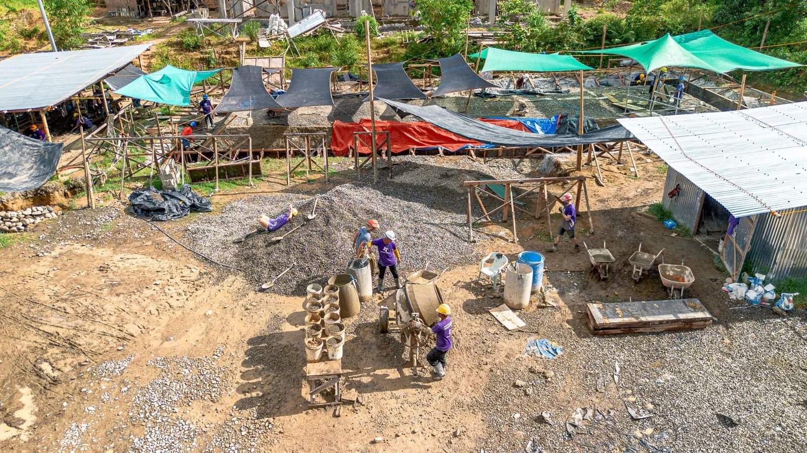

2024
Typhoon Relief
Southern Leyte, Philippines November 2024Back with All Hands and Hearts, this time helping families and schools recover from successive typhoons in the southern Philippines. Building back stronger — disaster-resilient schools designed to weather the next storm.